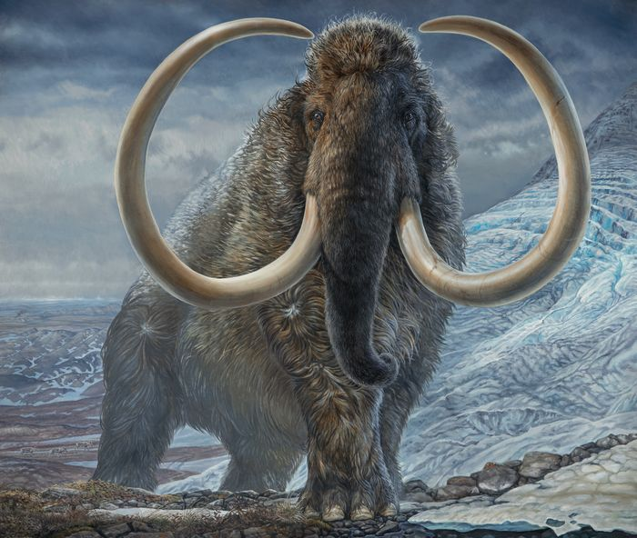

El Mamut
🐘 El Mamut (Género: Mammuthus)
🌍 Hábitat y distribución
Los mamuts vivieron en Europa, Asia, África y América del Norte durante la Era del Hielo (Pleistoceno). Habitaban en zonas frías y templadas, como la tundra y estepas heladas, donde había abundante pasto.
Características físicas
🌾 Alimentación
Eran herbívoros. Se alimentaban principalmente de: Hierbas, Arbustos, Cortezas de árboles, Hojas y ramas, Podían pasar más de 20 horas al día comiendo, debido a su gran tamaño.
Comportamiento y vida social
Los mamuts vivían en manadas dirigidas por una hembra, igual que los elefantes actuales. Cuidaban de sus crías y se desplazaban en grupo para protegerse y encontrar alimento.
Extinción
Los mamuts se extinguieron hace unos 4.000 años, aunque la mayoría desapareció mucho antes, al final del Pleistoceno, hace unos 10.000 años. Las principales causas de su extinción fueron: Cambio climático (fin de la Era del Hielo, que redujo su hábitat), Caza excesiva por parte de los primeros seres humanos, Escasez de alimento debido al deshielo y la transformación del paisaje. Algunas pequeñas poblaciones sobrevivieron más tiempo, como los mamuts enanos de la isla de Wrangel (Siberia), que vivieron hasta aproximadamente 2000 a.C.
🧬 Importancia científica
Gracias a que muchos mamuts quedaron congelados en el hielo, se han conservado restos completos con piel, pelo y órganos. Estos descubrimientos han permitido estudiar su ADN y comprender mejor la evolución de los elefantes. Científicos modernos incluso investigan la posibilidad de clonar o “revivir” al mamut mediante técnicas de genética avanzada, usando el ADN conservado y elefantes asiáticos como especie cercana.
🏛️ Curiosidades
El nombre “mamut” proviene del ruso mamont, que significa “tierra congelada” o “bestia del hielo”. Los colmillos servían para remover la nieve y buscar comida bajo el hielo. Algunos pueblos antiguos usaban sus huesos y colmillos para construir refugios o fabricar herramientas. Es uno de los animales prehistóricos más conocidos y representados en el arte rupestre.